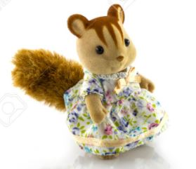

Brown Squirrel
Brown Squirrel can fly because of the powers he derives from Sun and his biology.
It can pull easily, and that ability, enhanced by solar energy, allows it to fly.
- Super Strength to move heavy things.
- Super Speed which would run faster than any.
- Leaping into tall buildings.
- Resistant to Injury.
- Hearing and Eyesight is excessive

Index